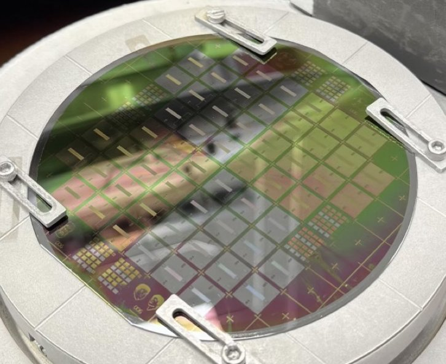
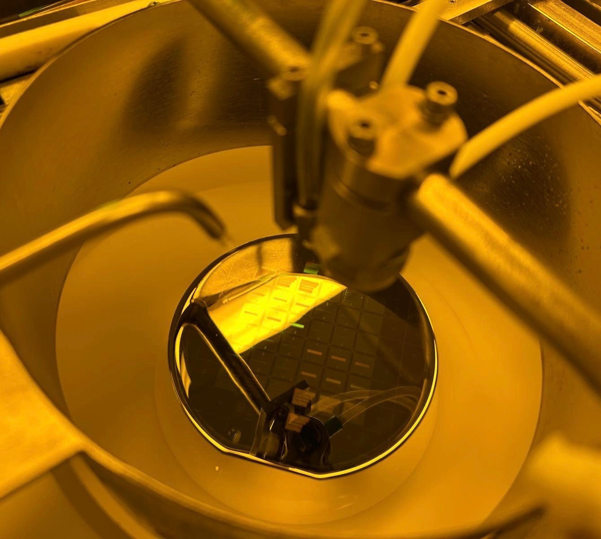
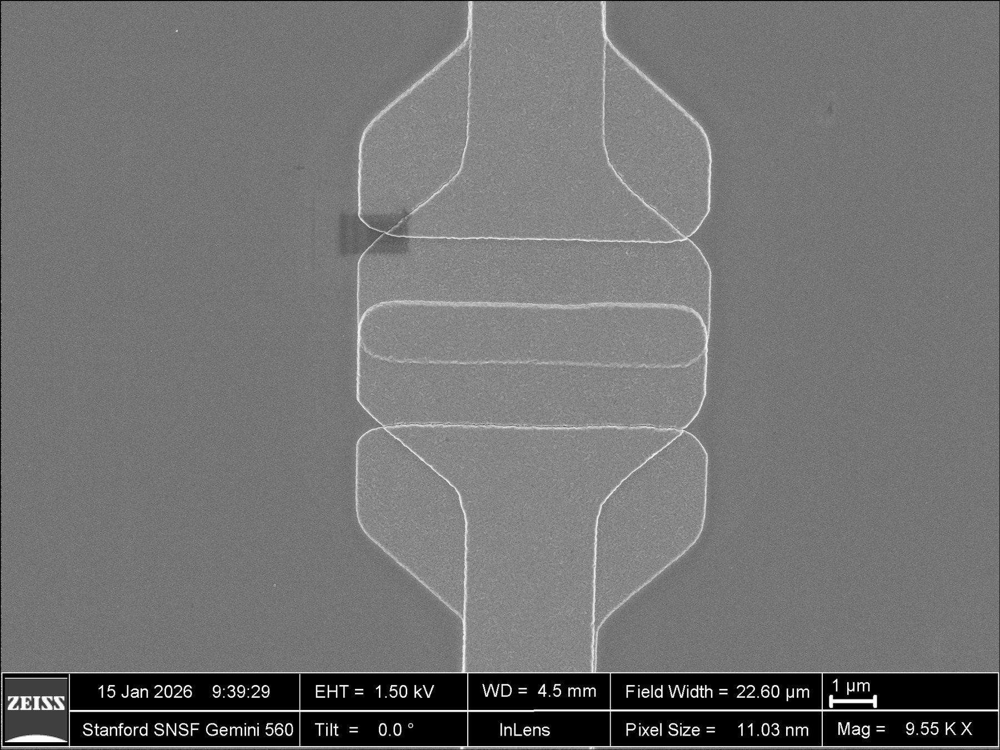
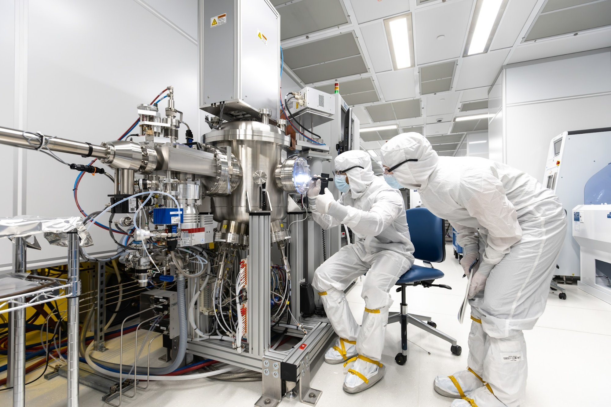
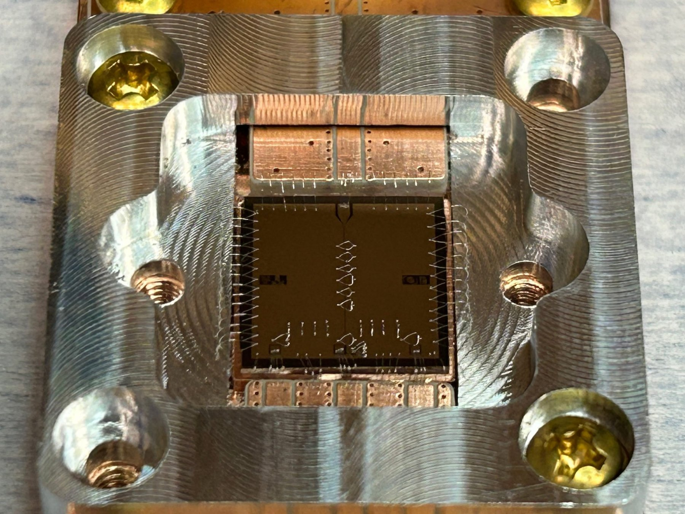
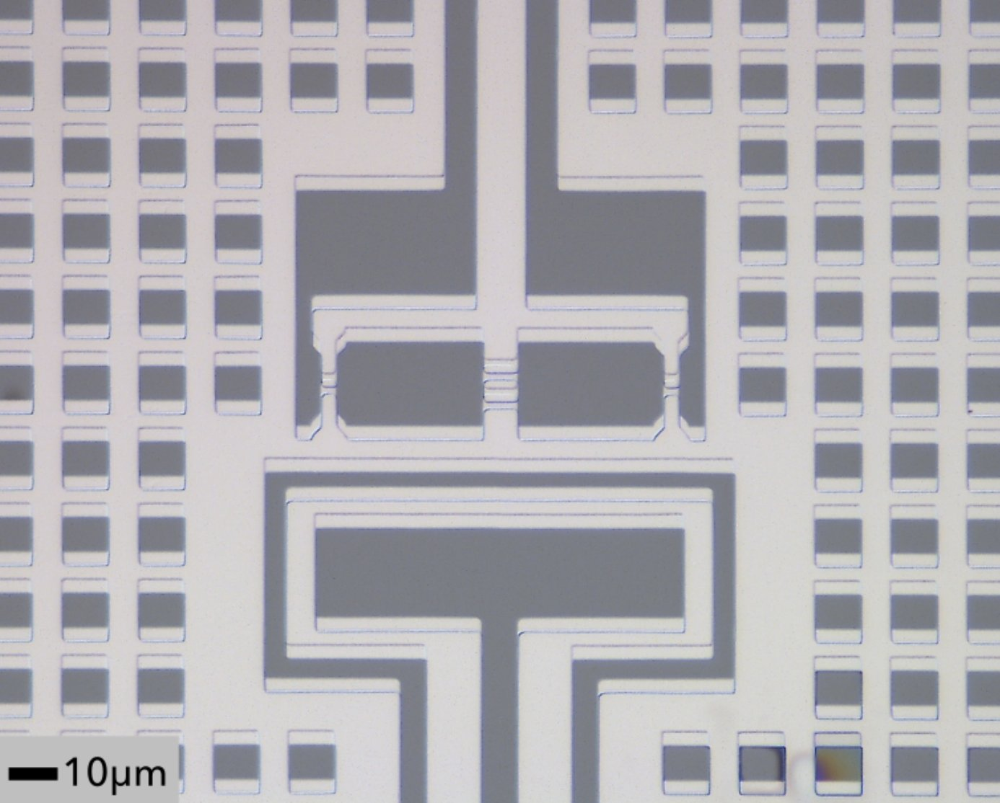

Radio-frequency Quantum Upconverters
Many experiments searching for physics beyond the Standard Model, including DMRadio, have reached the point where quantum noise limits their sensitivity. Improving them further requires quantum sensing techniques that reach, and ultimately surpass, the Standard Quantum Limit (SQL) of measurement.
The Irwin Group focuses on quantum sensing of electromagnetic signals in the VHF band (below 300 MHz), the frequency range of the axions targeted by DMRadio. We develop new quantum sensors, such as the Radio-frequency Quantum Upconverter (RQU), and use them to carry out quantum measurement protocols like backaction evasion for more sensitive searches for new physics.
Established quantum metrology techniques such as photon counting and squeezing already enable sensitivity beyond the SQL, but mostly at GHz frequencies. At MHz frequencies, thermal noise dominates on resonance, so the benefit of beyond-SQL readout appears when detuned from resonance, where amplifier noise sets the sensitivity. Reducing amplifier noise below the SQL widens the bandwidth over which a search is sensitive, enabling faster scans. The RQU is designed to overcome this. It embeds a network of Josephson junctions in a superconducting microwave resonator and uses their nonlinearity to upconvert MHz signals to GHz frequencies, where well-established quantum measurement protocols can be applied. This brings beyond-SQL sensitivity within reach in the VHF band.
We are currently optimizing the fabrication of our RQUs and using them to demonstrate quantum protocols such as backaction evasion. Next, we plan to build optimized devices with improved coupling and sensitivity, with the goal of integrating them into the DMRadio readout.




